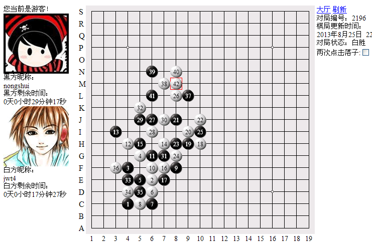
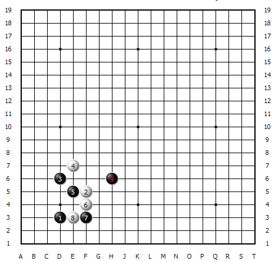
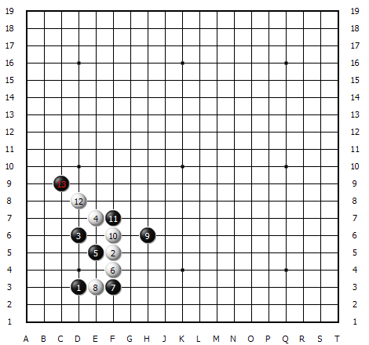
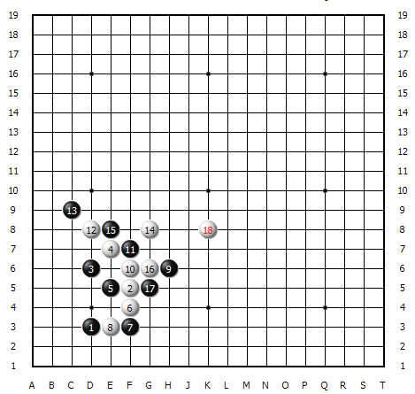
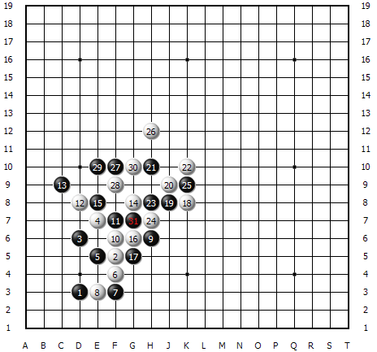
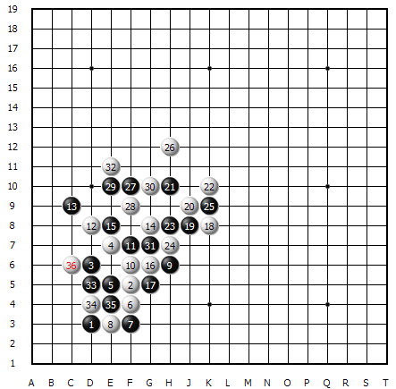
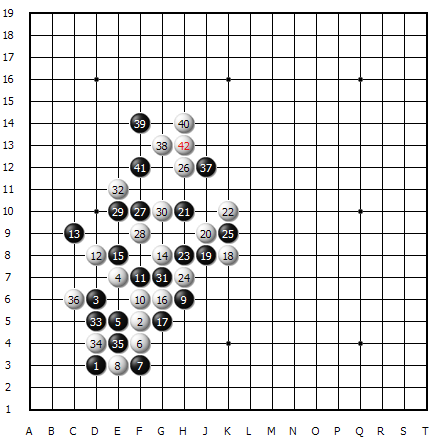
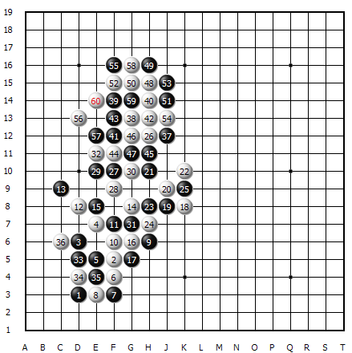

【暑假杯】艰难的围缴之战——迂回与包抄的运用
#1 【暑假杯】艰难的围缴之战——迂回与包抄的运用 作者：蓝天蓝 发表时间：2014-5-20 18:27:47
艰难的围缴之战——迂回与包抄的运用【讲五堂】jwt4 VS 【圣棋盟】nongshui对战解说
http://game.freewzq.com/offlineDisplayGame.html?html=339116&id=2196

这是第六轮的比赛，讲五堂四台VS圣棋盟四台，讲五堂执白胜出。

这盘棋我执白。我前几轮一直是执黑，大多都胜出了。只有上一轮与神话队相遇执黑输掉了，强悍的神话队执白胜利。这次我执白，希望能重演神话的故事，执白胜出。
开局还是老套路，我用了一个不常用的4手，5手并没理睬我，不紧不慢的按照即定的步骤按部就班的落子。6手老实的防守，7手回防，8手切断黑的连接。至9手，远远的飘了一手。一手下棋很怕这样的飘棋，让人感觉到深不可测。

10手不敢懈怠，强防。11手盖住10手棋。白棋型不是很好，稍不留神，很容易被黑棋包饺子，白棋要冲出包围圈。12活三，黑选择了防上面。

14手是一手和稀泥的棋，破坏黑棋连接，搅乱黑的步伐。使得黑棋不得不回来防守白棋的发展。紧接着16手又做了一手胜招。17不得不防。这样白棋骗得了先手，可以大胆的做棋了。18手一记远飘。很漂亮吧，这手棋是团体的智慧。这次比赛，我们家族充分发挥了团体的优势，互帮互助，齐心协力，各取所需，各抒已长，走出了很多像18这样的妙手，这些都是团体智慧的结晶。

19手至24手，黑与白较量各不相让，但总的感觉黑棋还是有些放不开，白棋要抓住对手的这个弱点大胆做棋。26手做了一手拓展棋，27手乘机做了二个活二，白棋不急着理睬它，继续活三，黑挡上，30手防黑一个活二，同时形成一个眠三。

接下来，黑棋连续做了一些二级招法。对白棋危胁并不大。

然后黑的37手又回来防守白棋。白棋继续攻击连着做了二个活三。黑棋防守后，42手白地毯。黑棋认输。

这是白棋42手后的其中一个胜法。仅供参考